Photos, diagrams, and design views from my projects.Back to my portfolio
The camera’s view of the gantry and game before processing.
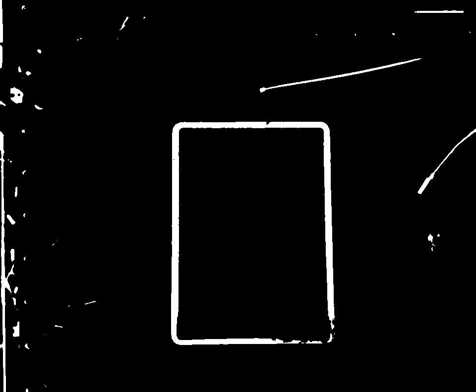
The dark-pixel mask used to isolate the iPad.
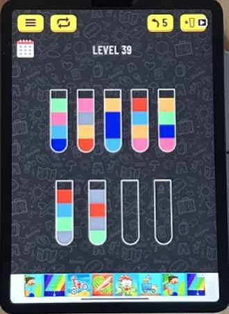
The detected screen warped into a consistent view.
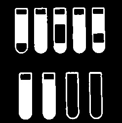
Thresholded tube outlines from the vision pipeline.
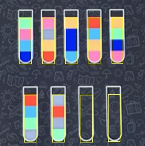
The filtered regions used for sampling each tube.
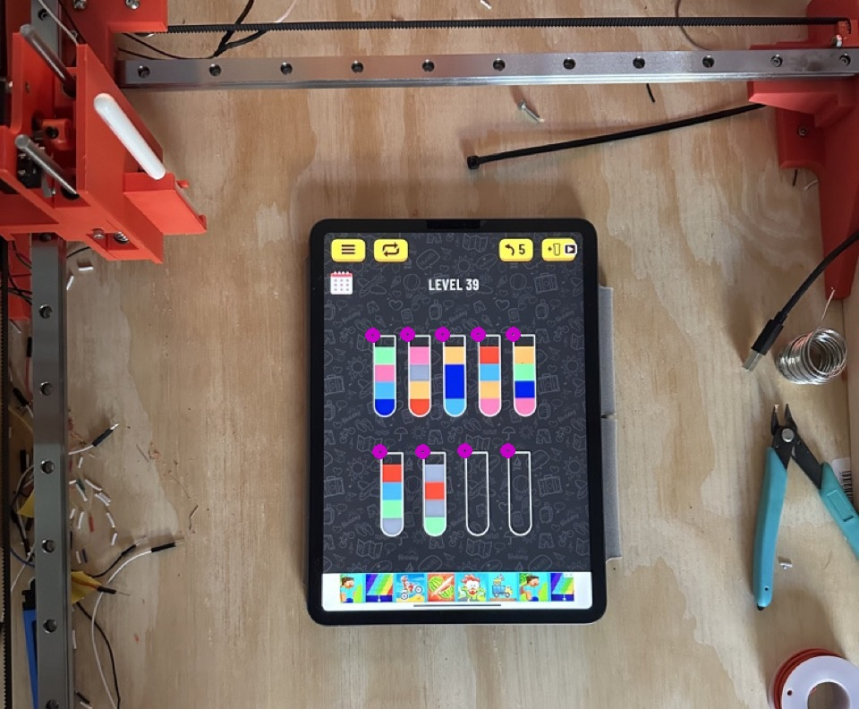
Tube centers shown on the camera view.
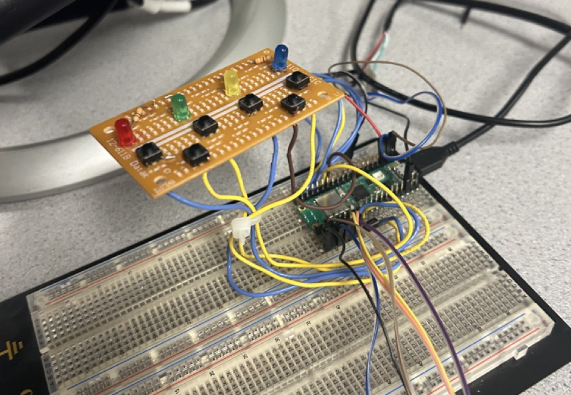
The soldered LED and button board connected to a Pico W.
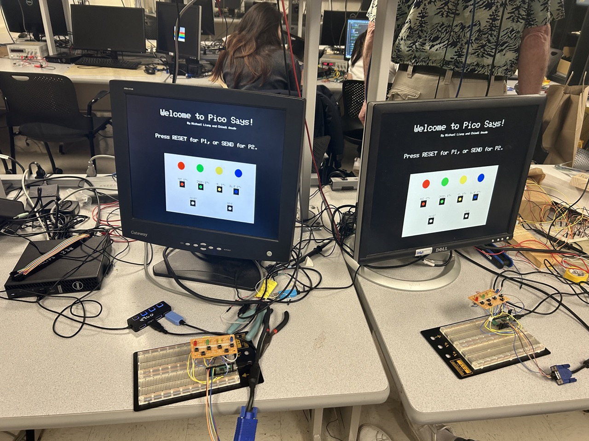
Both controllers and VGA screens running the game.
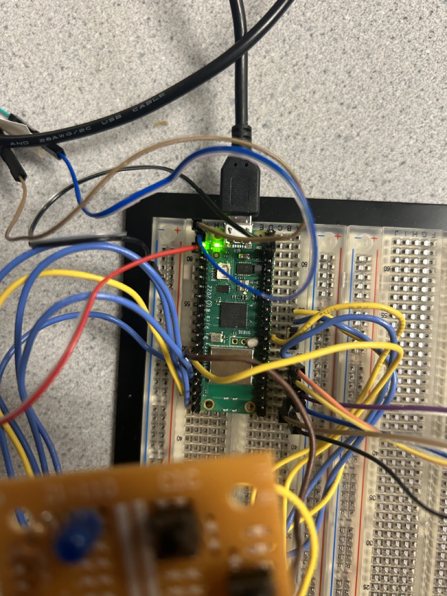
A closer view of the Pico W and prototype connections.
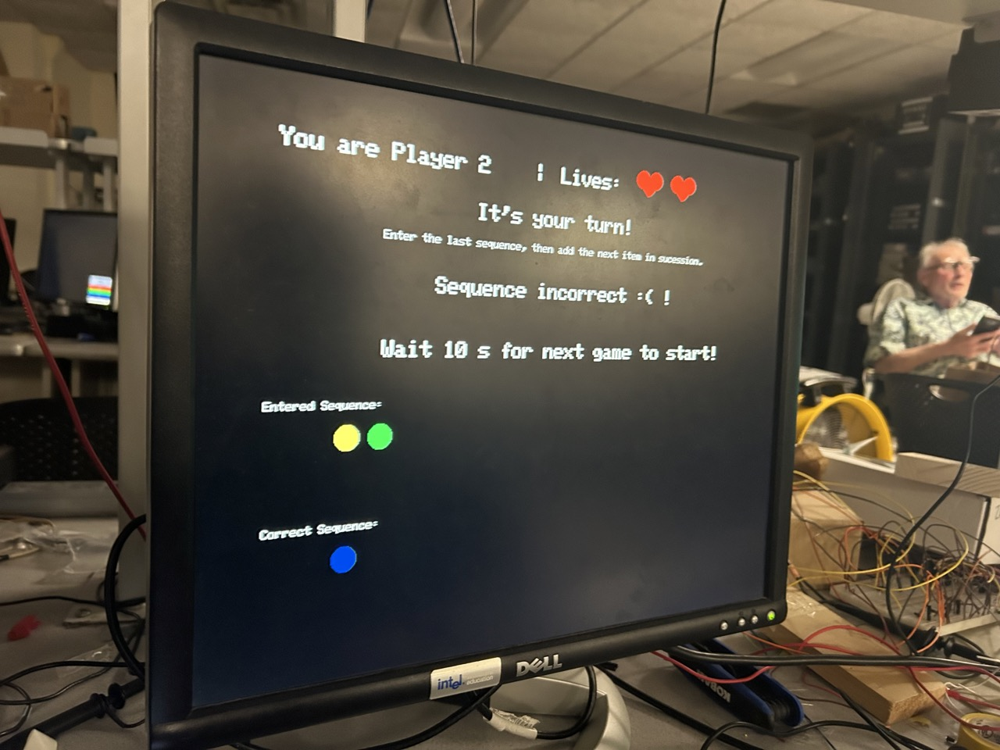
Turn instructions, lives, and sequence feedback on VGA.
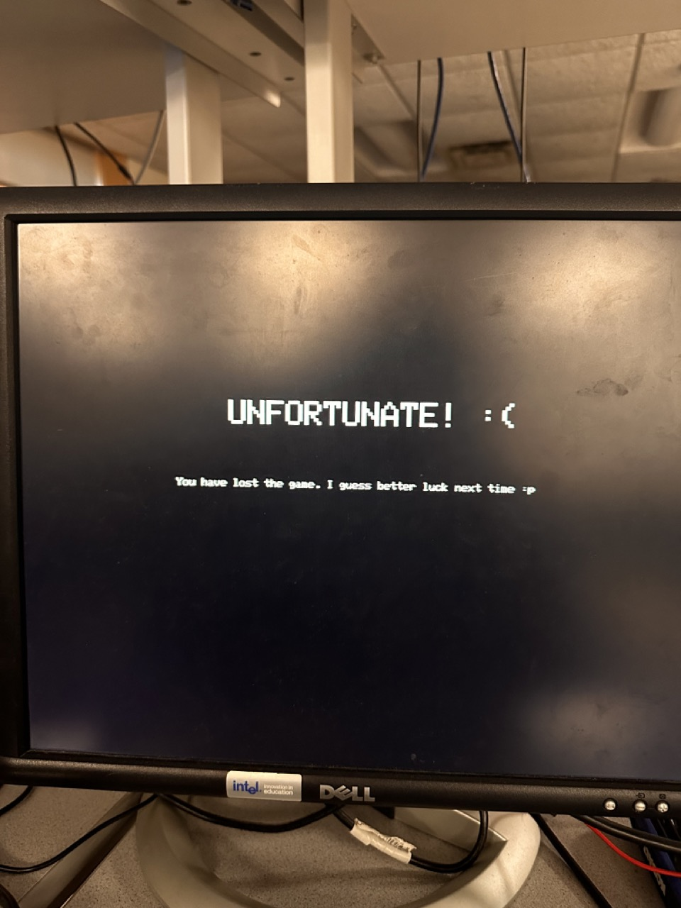
The game ends when a player runs out of lives.
The move number and sequence layout from our original report.
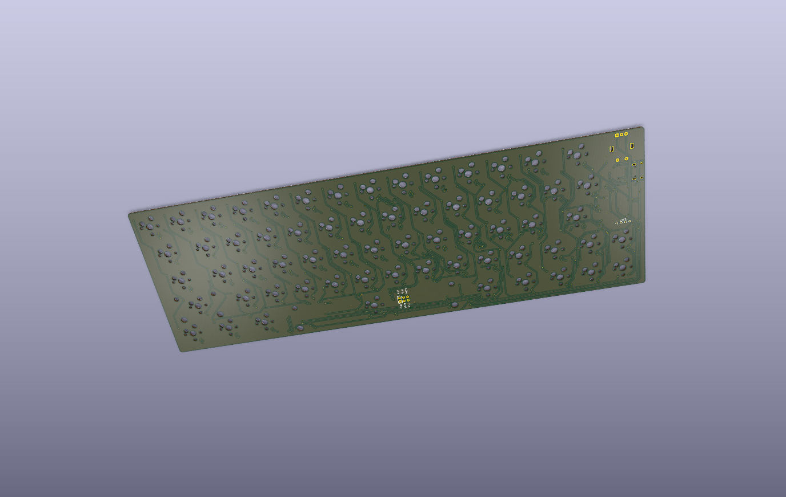
Bare PCB rendered from my original KiCad design.
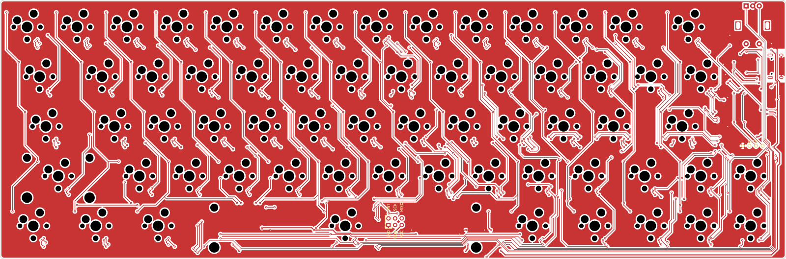
Copper routing, switch footprints, and board connections.
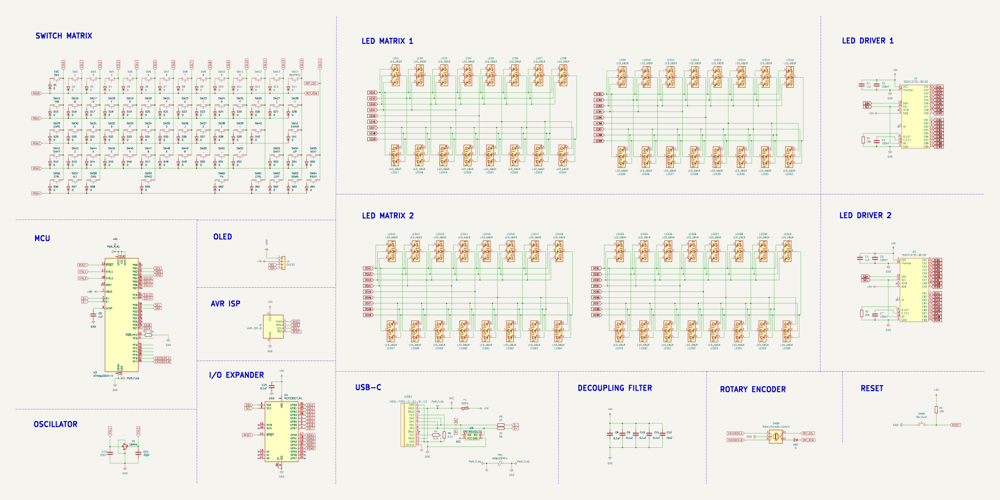
The switch and LED matrices, controller, OLED, and supporting circuits.
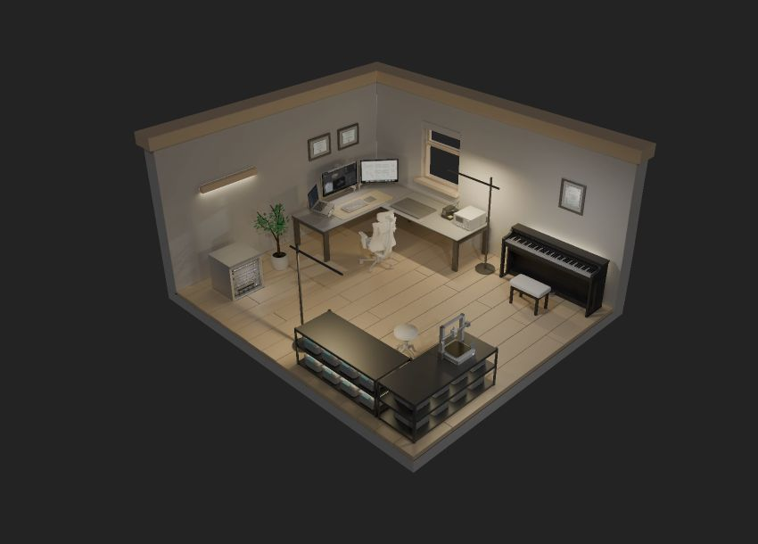
A capture of the interactive homepage.
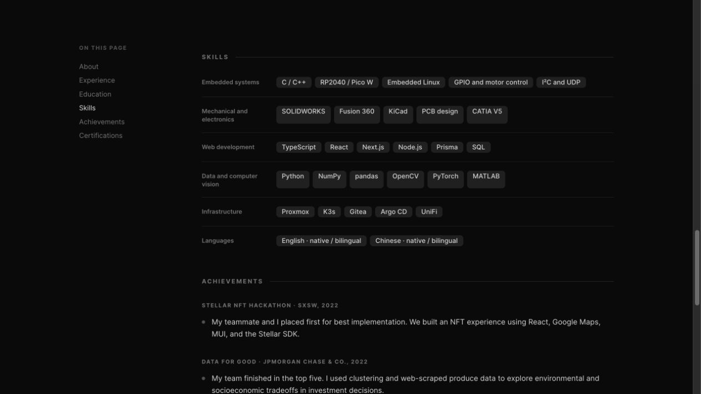
The live grouped skills and background layout.
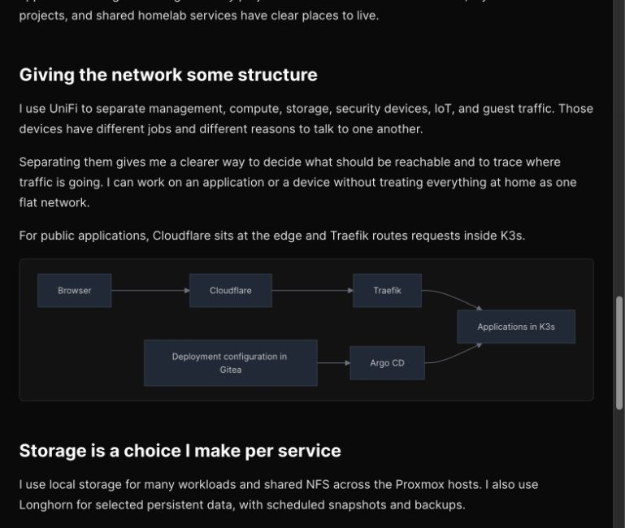
The live network explanation and diagram.
Organization icon used to identify a profile entry.
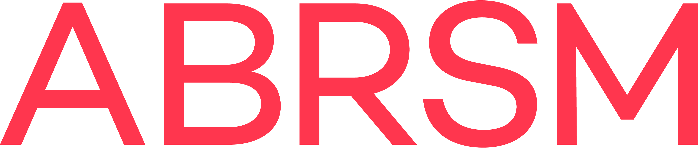